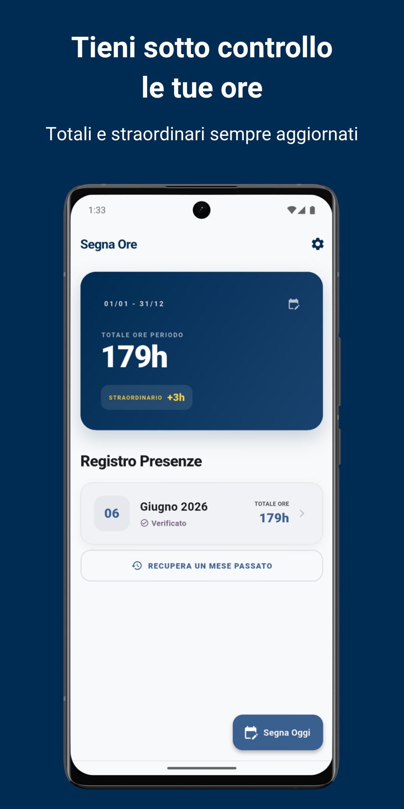
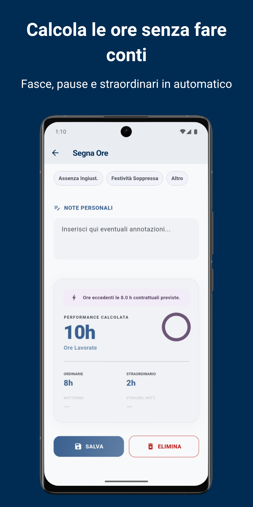
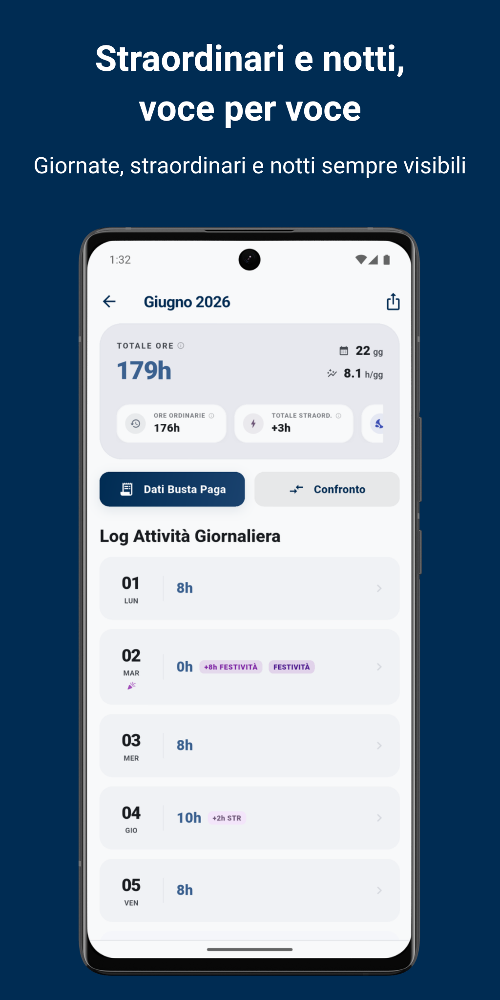
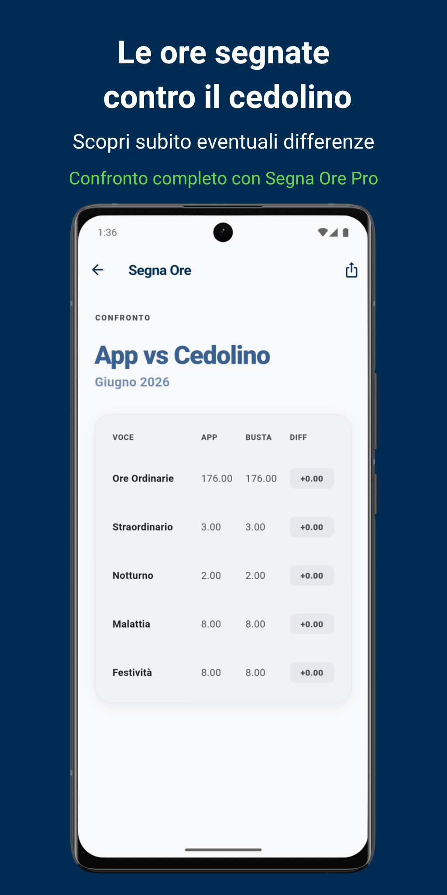

Cosa puoi fare

Tieni sotto controllo le tue ore
Totali e straordinari sempre aggiornati, mese per mese, per chi lavora su turni, con orari spezzati o contratti flessibili.

Calcola le ore senza fare conti
Doppia fascia oraria e pausa, anche oltre la mezzanotte, con compilazione guidata e suggerimento intelligente dell'ultimo orario (Smart Fill).

Straordinari e notti, voce per voce
Ore ordinarie, straordinari diurni e notturni (fascia 22:00–06:00 modificabile), straordinario settimanale, ferie, permessi, malattia e festività.

Le ore segnate contro il cedolino
Inserisci le ore della busta paga e scopri subito eventuali differenze (tolleranza 0,25 h sugli arrotondamenti). L'app confronta ore, non stipendi.
Prova Segna Ore gratis
Segna Ore ProAcquisto unico, senza abbonamento
- Niente pubblicità.
- Confronto dettagliato a 10 voci tra ore segnate e busta paga (straordinari, notte, ferie, permessi, malattia, festività).
- Riepilogo su qualsiasi periodo personalizzato.
- Export di un riepilogo da condividere con sindacati, CAF o responsabili.
Domande frequenti
Come vengono calcolati gli straordinari notturni?
Le ore che ricadono nella fascia notte (di base 22:00–06:00, modificabile nelle impostazioni) vengono separate automaticamente: lo straordinario svolto di notte è conteggiato come straordinario notturno, anche per i turni oltre la mezzanotte.
Come funziona il confronto con la busta paga?
A fine mese inserisci le ore ordinarie riportate sul cedolino: l'app le confronta con quelle registrate. Differenze entro 0,25 ore sono considerate verificato (OK), oltre scatta la segnalazione di discrepanza. Il confronto gratuito copre le ore ordinarie; la tabella completa a 10 voci è Pro.
Dove finiscono i miei dati?
Restano sul tuo dispositivo: nessun account, nessun server. Funziona anche offline e non richiede permessi sensibili. La versione gratuita mostra banner discreti solo in schermate secondarie, mai durante l'inserimento delle ore.
Quanto costa?
Il flusso ore completo è gratis per sempre. Segna Ore Pro è un acquisto unico (niente abbonamento) che rimuove la pubblicità e sblocca confronto dettagliato, export e periodo personalizzato.